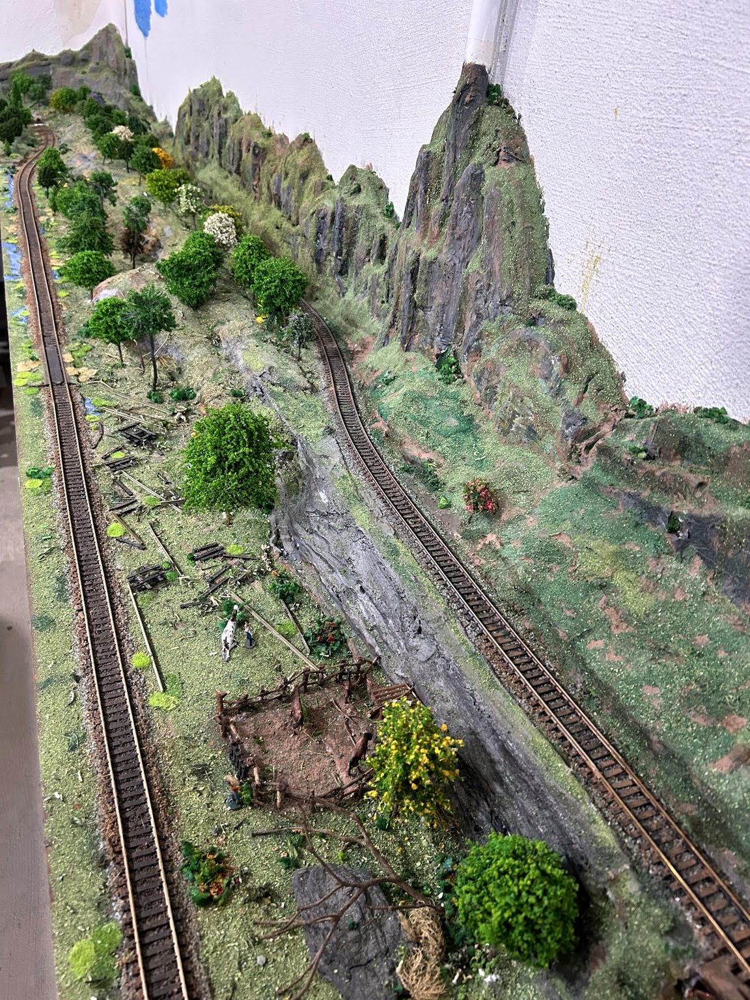

As grandes retas

Após os pontilhões, foram construídas duas grandes retas em dois níveis, criando um trecho longo e bastante visível da ferrovia.
No início desse cenário foi instalado um curral rústico com animais. Próximo aos trilhos foram colocados restos de dormentes e pequenos trechos de trilhos, representando um antigo ramal ferroviário desativado.
À direita, as pedreiras foram feitas com isopor, moldado com pincel e thinner e posteriormente pintado com tinta PVA para reproduzir o aspecto natural das rochas.
O cenário foi enriquecido com árvores, grama e arbustos confeccionados com buchas de cozinha picadas e pintadas. Também foi representada água acumulada ao lado dos trilhos.
Completando a cena, uma família de pacas pasta tranquilamente entre a vegetação. Devido ao tamanho extremamente reduzido das figuras na escala HO, esses pequenos animais quase não podem ser observados em detalhes.
No futuro, a parede ao fundo receberá uma pintura representando montanhas que se perdem no horizonte, sob um céu azul com nuvens brancas, ampliando visualmente a profundidade do cenário.